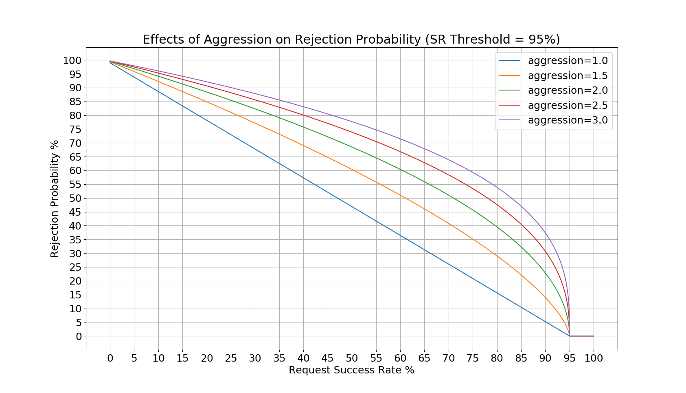

Admission Control
See the v3 API reference for details on each configuration parameter.
Overview
The admission control filter probabilistically rejects requests based on the success rate of previous requests in a configurable sliding time window. It is based on client-side throttling from the Google SRE handbook. The only notable difference between the admission control filter’s load shedding and load shedding defined in client-side throttling is that users may configure how aggressively load shedding starts at a target request success rate. Users may also configure the definition of a successful request for the purposes of the rejection probability calculation.
The probability that the filter will reject a request is as follows:
where,
n refers to a request count gathered in the sliding window.
threshold is a configurable value that dictates the lowest request success rate at which the filter will not reject requests. The value is normalized to [0,1] for the calculation.
aggression controls the rejection probability curve such that 1.0 is a linear increase in rejection probability as the success rate decreases. As the aggression increases, the rejection probability will be higher for higher success rates. See Aggression for a more detailed explanation.
Note that there are additional parameters that affect the rejection probability:
rps_threshold is a configurable value that when RPS is lower than it, requests will pass through the filter.
max_reject_probability represents the upper limit of the rejection probability.
Note
The success rate calculations are performed on a per-thread basis for increased performance. In addition, the per-thread isolation prevents decreases the blast radius of a single bad connection with an anomalous success rate. Therefore, the rejection probability may vary between worker threads.
Note
Health check traffic does not count towards any of the filter’s measurements.
Note
Only non-route-specific virtual host configurations are supported.
See the v3 API reference for more details on this parameter.
The definition of a successful request is a configurable parameter for both HTTP and gRPC requests.
Aggression
The aggression value affects the rejection probabilities as shown in the following figures:

Since the success rate threshold in the first figure is set to 95%, the rejection probability remains 0 until then. In the second figure, there rejection probability remains 0 until the success rate reaches 50%. In both cases, as success rate drops to 0%, the rejection probability approaches a value just under 100%. The aggression values dictate how high the rejection probability will be at a given request success rate, so it will shed load more aggressively.
Example Configuration
An example filter configuration can be found below. Not all fields are required and many of the fields can be overridden via runtime settings.
1 '@type': type.googleapis.com/envoy.extensions.filters.network.http_connection_manager.v3.HttpConnectionManager
2 stat_prefix: ingress_http
3 http_filters:
4 - name: envoy.filters.http.admission_control
5 typed_config:
6 '@type': type.googleapis.com/envoy.extensions.filters.http.admission_control.v3.AdmissionControl
7 enabled:
8 default_value: true
9 runtime_key: admission_control.enabled
10 sampling_window: 60s
11 sr_threshold:
12 default_value:
13 value: 95.0
14 runtime_key: admission_control.sr_threshold
15 aggression:
16 default_value: 1.0
17 runtime_key: admission_control.aggression
18 rps_threshold:
19 default_value: 1
20 runtime_key: admission_control.rps_threshold
21 max_rejection_probability:
22 default_value:
23 value: 95.0
24 runtime_key: admission_control.max_rejection_probability
25 success_criteria:
26 http_criteria:
27 http_success_status:
28 - start: 100
29 end: 400
30 - start: 404
31 end: 404
32 grpc_criteria:
33 grpc_success_status:
34 - 0
35 - 1
36 - name: envoy.filters.http.router
37 typed_config:
38 '@type': type.googleapis.com/envoy.extensions.filters.http.router.v3.Router
39 route_config:
40 name: local_route
41 virtual_hosts:
42 - domains:
43 - '*'
44 name: local_service
45 routes:
46 - match: {prefix: "/"}
47 route: {cluster: default_service}
48 clusters:
The above configuration can be understood as follows:
Calculate the request success-rate over a 60s sliding window.
Do not begin shedding any load until the request success-rate drops below 95% in the sliding window.
HTTP requests are considered successful if they are 1xx, 2xx, 3xx, or a 404.
gRPC requests are considered successful if they are OK or CANCELLED.
Requests will never be rejected from this filter if the RPS is lower than 1.
Rejection probability will never exceed 95% even if the failure rate is 100%.
Statistics
The admission control filter outputs statistics in the http.<stat_prefix>.admission_control. namespace. The stat prefix comes from the owning HTTP connection manager.
Name |
Type |
Description |
|---|---|---|
rq_rejected |
Counter |
Total requests that were not admitted by the filter. |
rq_success |
Counter |
Total requests that were considered a success. |
rq_failure |
Counter |
Total requests that were considered a failure. |